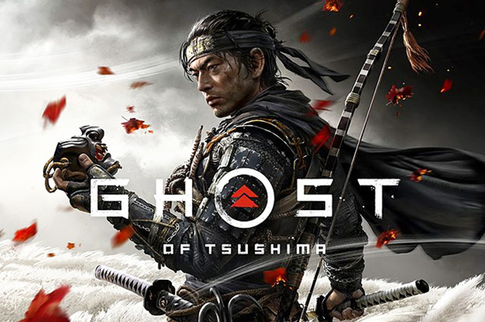

Nouvelle sortie: test de ghost of tsushima.
Review
Ghost of Tsushima sur PS4 est un jeu d'action qui prend place au Japon dans lequel les développeurs ont mis les détails au centre du jeu afin qu'il respecte l'Histoire du pays. Le monde étant totalement ouvert, le joueur pourra s'y balader afin de découvrir ce pays d'antan.